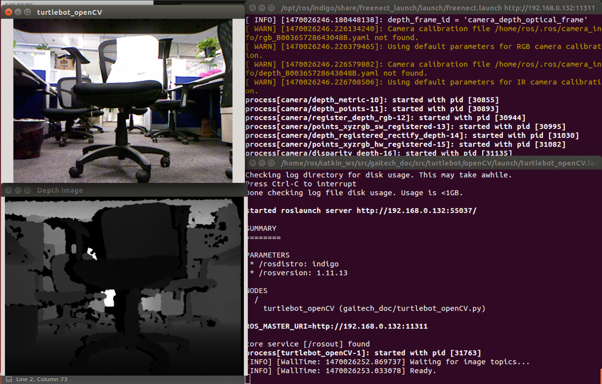

ROS OpenCV with Turtlebot
In this tutorial you will learn how to configure your turtlebot robot with OpenCV to stream videos from Microsoft Kinect.
Warning
- Make sure that you completed installing all the required packages in the previous tutorials, your network set-up is working fine between the ROS Master node and the host node.
- Make sure to complete the ROS OpenKinect with Turtlebot tutorial.
Installing OpenCV packages
You need to download the OpenCV packages by running the following commands:
sudo apt-get install ros-indigo-vision-opencv libopencv-dev \ python-opencv
rospack profile
After installation type this command to make sure that you have successfully installed the packages:
$ python
>>> from cv2 import cv
>>> quit()
You can type the following command to make sure that the OpenCV Python library is installed in its proper location:
locate cv2.so | grep python
You will get an output like this:

Transform Image from ROS to OpenCV
In this section you will learn how to recieve and transform images from ROS and transform them to OpenCV.
Note
Make sure that you downloaded the gaitech_doc package from our GitHub repository [https://github.com/aniskoubaa/gaitech_doc]
You will find a launch file called turtlebot_openCV in the following path gaitech_doc/src/turtlebot/openCV/launch/turtlebot_openCV.launch , run the file in a terminal:
roslaunch gaitech_doc turtlebot_openCV.launch
Note
Make sure that your camera driver is running.
roslaunch freenect_launch freenect.launch
After a short time you will see some thing like this:
To understand the whole process of transformation you can open the python script in the following path gaitech_doc/src/turtlebot/openCV/scripts/turtlebot_openCV.py , the file is well documented so you will be able to understand everything written inside the code.
Note
This code is originally from the cv_bridge_opencv.py file in the rbx1_vision package but with some other modifications.